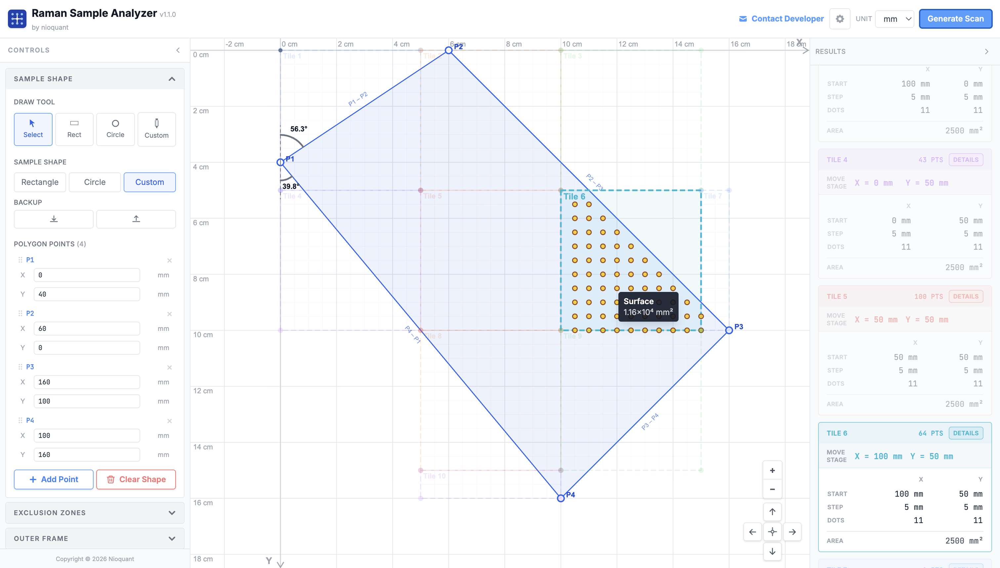
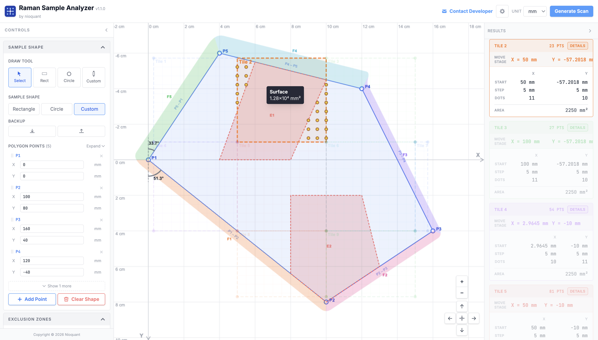
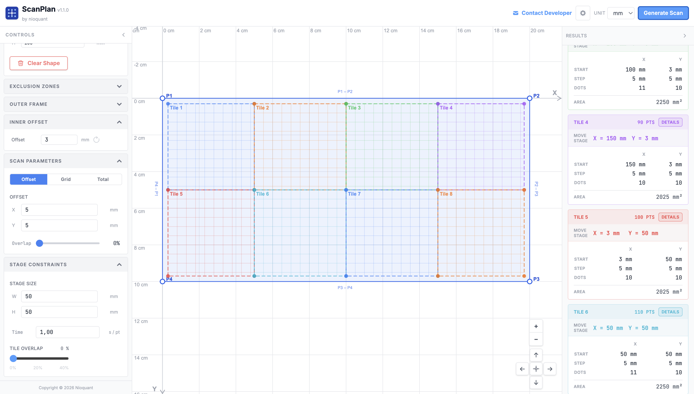

Built for real instrument work
Every feature in ScanPlan came from an actual frustration with manual scan setup. There's no account, no installation, no dependencies to manage. Open the browser and start drawing.
Three shape types
Rectangle, circle, and fully custom freeform polygon with editable vertex coordinates.
Step or dot-count input
Enter a step size in µm or a target number of scan points; the other value updates automatically.
Automatic multi-pass
Splits large regions into minimum-tile passes when sample exceeds your configured stage travel limit.
Exclusion zones
Draw freeform no-scan regions anywhere on the sample. Points inside are skipped automatically.
µm / mm unit switching
Work in whichever unit your instrument uses. All values convert instantly.
No installation needed
Runs entirely in the browser. No account, no setup, no dependencies to manage.
Draw what you actually want to measure #
Most samples aren't rectangles. A tissue cross-section has irregular borders. A crystal fragment is polygonal. A cross-sectioned fiber is circular. ScanPlan lets you trace the exact outline of your region of interest: rectangle, circle, or a fully custom freeform polygon, directly on a calibrated canvas using real microscope coordinates in µm or mm. Once a freeform shape is closed, two alignment arcs appear at vertex P1 showing the angle each adjacent edge makes with the Y axis, so you can physically orient the sample on the stage before the scan begins, without guesswork.

Only measure what's inside the shape #
Once your shape is drawn, set your step size in X and Y (or target dot count) and hit Generate. The planner uses a point-containment algorithm to build a scan grid that covers only the points inside your defined region, skipping every empty area. No wasted spectra, no inflated scan time, no post-processing to remove dead points. You get start coordinates, Δx/Δy deltas, Nx × Ny grid dimensions, and total point count, ready to enter directly into your instrument software. Need to skip a sub-region entirely? Draw exclusion zones: freeform no-scan areas anywhere on the sample. Any scan point that falls inside an exclusion zone is dropped automatically. Enable the outer frame overlay to visualize a per-edge physical border drawn outside the shape boundary: each polygon edge gets its own configurable frame width (F1, F2, F3...), making it easy to account for mounting frames or keep-out margins around the real sample edge.

Sample bigger than your stage travel? Handled. #
Many instruments have a maximum stage scan range per pass. When your sample is larger, you'd normally split the scan manually, figure out the tile boundaries, and reposition the stage between each tile. ScanPlan does this automatically. Enter your stage size limit once and the planner tiles your region into the minimum number of passes, computing exact start coordinates for each pass so you know exactly where to position the stage. All passes are shown simultaneously on the canvas with distinct colors. Hover any scan dot to see its sequential point number and exact X/Y coordinates, so you can verify coverage or trace individual points back to the instrument. Switch to the Optimized tab to let the rotation optimizer find the angle that reduces the tile count further, with fewer repositions, less total scan time. When the plan is ready, export it as a CSV of all scan points or a formatted PDF report with a canvas snapshot and the full per-tile breakdown.
Know your scan time before you start #
A poorly planned scan can tie up an instrument for hours or days. ScanPlan calculates an estimated total scan time from your step size and the time-per-point you configure for your hardware. Hover any tile to see its covered surface area instantly. Adjust step size or overlap and the estimate updates in real time, so you can find the right resolution vs. time tradeoff before touching the microscope. If your point count exceeds 10,000 or 50,000 points, explicit warnings appear to help you catch oversized scans early. Tiles with zero scan points are excluded from all counts and labels so the numbers you see always reflect what the instrument will actually measure. Set an inner offset to push the scan grid inward from each tile boundary by a fixed distance, useful when the hardware cannot reliably start a scan right at the stage limit edge.

Works with any point-mapping instrument #
ScanPlan is instrument-agnostic. If your microscope scans a point grid across a sample surface and you enter X/Y start coordinates and step sizes, ScanPlan generates the plan. Here are the techniques and common instrument families it supports.
Raman Microscopy
Chemical imaging via inelastic light scattering. Maps molecular composition, crystal phase, strain, and defects across a surface at submicron resolution.
Devices: Thermo Scientific DXR3, Horiba LabRAM HR Evolution, Renishaw inVia Qontor, WITec Alpha300 R, Bruker Senterra, Kaiser Nomadic
Confocal Fluorescence
Point-by-point fluorescence imaging with optical sectioning. Used for cell biology, material interfaces, and 3D volume reconstruction of labeled samples.
Devices: Zeiss LSM 900 / 980, Leica SP8 / STELLARIS, Nikon A1 / AX, Olympus FV3000, Abberior STED instruments
TERS / Nano-Raman
Tip-enhanced Raman spectroscopy combines AFM positioning with Raman detection at nanometer resolution. Requires precise nm-scale point grid planning.
Devices: WITec Alpha300 RA, Horiba LabRAM Nano, attocube attoRaman, Bruker TERS module
XRF Mapping
X-ray fluorescence element mapping. Scans a focused X-ray beam across the sample to produce element distribution maps on cross-sections, geological samples, and thin films.
Devices: Bruker M4 Tornado, Rigaku Primus IV, Oxford ED2000, Horiba XGT-9000, EDAX Orbis
EBSD / EDS in SEM
Electron backscatter diffraction and energy dispersive X-ray spectroscopy in scanning electron microscopes. Maps crystal orientation and elemental composition simultaneously across polished cross-sections.
Devices: EDAX Velocity, Oxford AZtec HKL, Bruker QUANTAX EBSD, Thermo Fisher Apreo / Helios, Zeiss Sigma / Gemini
AFM / SPM Scanning
Atomic force and scanning probe microscopy on irregular sample geometries: thin film patches, MEMS devices, biological sections. ScanPlan defines the measurement region before setting up the instrument.
Devices: Bruker Dimension Icon / FastScan, Asylum Research MFP-3D / Cypher, Park Systems NX20, Oxford MFP-3D
SIMS Imaging
Secondary ion mass spectrometry for isotope mapping and trace element analysis. Irregular sample boundaries on polished mounts benefit from precise scan region planning to avoid edge artefacts.
Devices: CAMECA IMS 1280 / 7f, PHI nanoTOF II, IONTOF TOF.SIMS 5, Cameca NanoSIMS 50L
EPMA Mapping
Electron probe microanalysis with wavelength dispersive spectrometers. Used for quantitative element mapping of minerals, alloys, and ceramics on polished sections with complex geometries.
Devices: JEOL JXA-8530F / iHP200F, Cameca SXFive / SX100, Thermo Fisher MagnaRay WDS
Nano-FTIR / s-SNOM
Scattering-type scanning near-field optical microscopy and nano-scale infrared spectroscopy. Maps chemical composition at 10–20 nm resolution. Point grid planning is critical to cover features efficiently.
Devices: Neaspec neaSNOM, Bruker Anasys nanoIR3-s, attocube attoCFM, Molecular Vista PhotoIR
XPS Mapping
X-ray photoelectron spectroscopy imaging maps surface elemental composition and chemical bonding states across a sample. ScanPlan defines the spatial grid for area-averaged or high-resolution small-spot acquisition.
Devices: Thermo Fisher ESCALAB Xi+ / K-Alpha, Kratos AXIS Supra / Ultra, PHI VersaProbe 4, SPECS PHOIBOS
What's new #
- Rotation tile toggle: switching to "Optimized" tab shows only those tiles; switching back to "Current" shows only the original tiles
- Rotated dot clipping fix: dots no longer disappear when the shape is moved near the viewport edge on the rotated tab
- Hover/focus fix (rotated): mousing over a tile on the rotated tab correctly highlights only that tile's dots
- Copy All (rotated): copying on the rotated tab now copies the rotated tile data with full decimal precision
- Outer frame: configurable border inset from the sample edge that is excluded from scanning on all sides
- Inner offset: additional uniform inset applied inside the outer frame so the scan grid starts away from the boundary edge rather than right at it
- Both fields support all display units and reformat correctly when the global unit is changed
- Tile counter fix: tiles with zero scan points are excluded from all counts and labels
- Cross-tile deduplication: scan points already claimed by an earlier tile are never repeated in subsequent tiles
- Total mode live calculation: when "Total Dots" input mode is active, step size and grid dimensions are recalculated automatically
- Grid anchoring: the scan grid now starts at the inner-offset boundary rather than the original shape edge
- Alignment angles at P1: two arcs shown at vertex P1 indicating the angle each edge makes with the Y axis
- P1 point style unified: P1 now matches all other control points (white fill, blue stroke)
- CSV export: exports all scan points with point order number, tile name, X and Y in the current display unit
- PDF report: exports a formatted PDF with a canvas snapshot and all sidebar configuration
- Config export/import: all new fields are fully round-tripped in the JSON config
- Draw freeform no-scan regions anywhere on the sample; scan points inside are skipped
- Tile preview hidden during exclusion drawing for a cleaner view
- Contextual tooltips on hover for all controls
- Removed Quick Presets and Stage Presets for cleaner UI
- Draw sample regions as rectangles, circles, or fully custom freeform polygons
- Interactive canvas with zoom and pan, calibrated in real microscope coordinates
- Editable polygon vertex coordinates directly in the control panel
- Point-containment algorithm generates scan points only within the defined shape
- Step size input (µm) or target dot-count mode with automatic synchronization
- Outputs start point, delta X/Y, Nx × Ny grid dimensions, and total point count per pass
- Automatically tiles samples that exceed the configured stage travel limit into minimum passes
- Each pass shown with distinct color on the canvas
- Exact start coordinates for each pass ready to enter into instrument software
- Configurable max scan width, max scan height, and time-per-point for your instrument
- Estimated total scan time calculated from point count and time-per-point
- Switch between µm and mm units throughout the interface
- Dark and light theme support